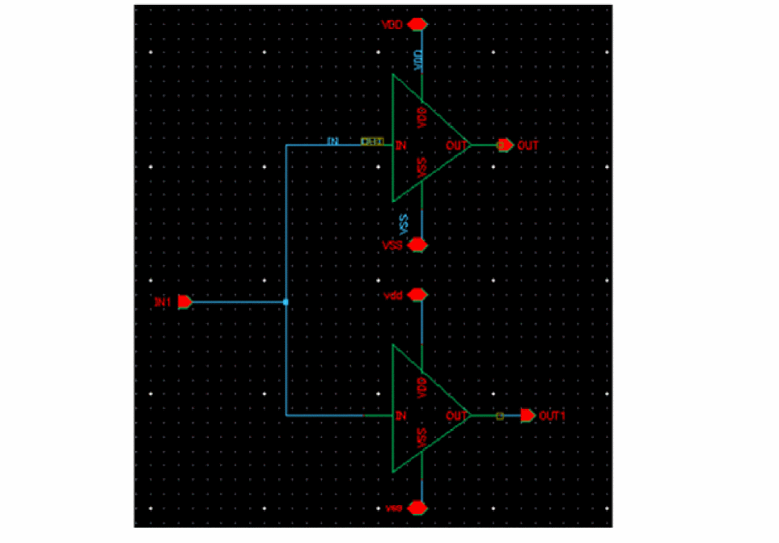

Design Partitioning
A design can contain different types of cells. For example, the following example design contains various types of blocks.

During extraction, the extractor handles each type of cell differently. For example, if a cell is already bound with a 1801 file that was previously imported in the schematic of the cell, the extractor refers to the1801file instead of re-extracting the power information of the cellview.
Similarly, for all multi-supply cells that contain primitive cell instances that were identified during the partitioning stage, the extractor extracts the cellview-level power domain information and stitches it to the top-level domains. Instances of single supply cells are considered as standard cells and their power attributes are derived from their corresponding Liberty model and stitched to the top-level power domains. Therefore, before extracting power intent, the tool needs to identify different types of cells and blocks in the design.
During partitioning, the Schematic Editor traverses through the design and identifies the following types of cells:
After the design partitioning, the next step is the design elaboration. The design elaboration involves the creation of an Embedded Module Hierarchy (EMH), which is a model for storing the hierarchical design data supported at the open access database level. For Power Manager, this open access cellview is called the power view. The extractor traverses the entire schematic hierarchy to achieve the following:
- Builds a data structure that contains the OA equivalent objects from the database objects encountered. The structure includes a top-level design, instances, nets, terms, instTerms and net connectivity.
- Utilizes all the instances of the cells that have Liberty models, associated power views, and associated 1801 model.
- Extracts power intent by tracing the connectivity. The connectivity tracing is done considering the block domain of open access cellview, that is, the flat representation of the entire schematic hierarchy in EMH.
- Identifies power nets and ground nets and their equivalent power or ground nets by the sigType in the schematic or the name-based registration in the setup.
- Identifies switchable or non-switchable power nets or ground nets. This is the output from switch supply pin of switch cell instances (Power Switch).
- Pairs the power nets and ground nets. PG net pairing is done by looking at the related PG pins of standard cell instances, special cell instances, macro cell instances. In addition, pairing is also done by tracing a path between the top-block power and ground nets through the source-drain terminals of transistors, shorts, and connector devices in the top block.
- Models various states where every single supply each state is assigned a specific voltage or the state of supply sets, that is, collection of supplies instead of individual supplies by using PST for exporting design and power models.
- Assigns instances to the power domains.
- Creates power states and the power modes. Also, assigns power domains to these power modes.
-
Identifies boundary ports and assigns these ports to the power domains. This identification is done based on tracing the connectivity through transistors and two terminal devices. Related power and ground nets of ports are derived by analyzing the related supplies of the driver or receiver instTerms in the top block. While identifying ports for creating power domains, it is checked whether the port could be related to more than one power domain by virtue of its connections to one or more instances that may belong to multiple power domains. In such a situation, the port is not associated with any power domain and the warning messages are issued depending on the situation. There are three scenarios where the ports are not related to any of the power domains due to ambiguity in deciding the power domain:
Case 1: In this scenario, port C can be related to either of the two supply sets (SS__VDD__VSSandSS__VDDext__VSS) due to its connectivity toM2, which falls in the path ofVDD,VSSas well asExtVDD,VSS. Therefore, port C is not related to any supply set because there is ambiguity related to its power domain.
Case 2: In this scenario, the port IN1 is driving two inverter instances that belong to different supply sets and so it can be assigned either toSS__VDD__VSSorSS__vdd__vss. Therefore, port IN1 is not related to any supply set because there is ambiguity related to its power domain.
Case 3: In this scenario, the portTOP_INdrives two pins,IN1andIN2, of a hierarchical instance. Inside the instances (not shown in the image),IN1andIN2are separately driving two inverters, which are in two separate supply setsSS__VDD1__VSSandSS__VDD2__VSS, respectively. The portTOP_INcan be assigned eitherSS__VDD1__VSSorSS__VDD2__VSS, therefore, it is not related to any supply set due to ambiguity in its power domain.
In such scenarios, you can provide the information of data ports to explicitly specify their supply set, forcing the tool to associate the data ports to the desired power domain.
While extracting power intent, Power Manager gives precedence to the explicit registration of the port attributes and traces connectivity through transistors and the two-terminal devices. Each data terminal that can be traced to a power terminal is created as a boundary port for the corresponding power domain. If a data terminal is connected to more than one power terminal, it is attached to the power domain as specified in the port attribute registered in the setup for that data terminal. If the port attribute is not registered in the setup, the tool would associate the data terminal to all possible power domains found by connectivity tracing.
\w *WARNING* (LP-3034): Could not determine driver/receiver supplies for logic port 'enps_3v3_i, dll_amux_ao, dll_ibias_10u_ai' in the Liberty or setup files. Ensure that the required supplies are defined in the files.
- Derives domain shutoff conditions by backtracing the enable pins of switch cell instances in the top block to the top block ports and combining those ports in suitable expression as per the design.
-
Integrates sub blocks that have their own 1801files.
- If the 1801 block has a power intent specified as a Liberty macro model, it identifies the top-level domain that maps to the macro-level domain and creates a domain mapping. PG net voltages in macro cells are assigned from the top net voltages. This might lead to a conflict if the net voltage specified in the macro model are of different voltage levels as compared to the voltage levels of the top net voltage. This conflict can be noted at the verification stage of the power intent.
- If the 1801 block has power intent of the design model type, Power Manager collates all the power domains in the 1801 block hierarchy and integrates the 1801 cell in the same way as for a block with the macro model type.
- Identifies low power special cells and creates power switch rules, isolation rules, and level shifter rules, as required. Enable conditions are derived by backtracing the enable pins of special cells.
Related Topics
Identification of Design Objects
Registering Supply Set and Power Domain
Return to top